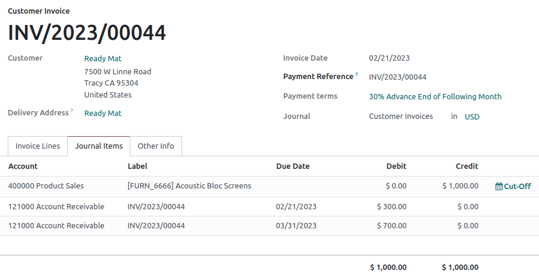

Términos de pago y planes de pago a plazos¶
Para asegurarse de que los clientes paguen sus facturas a tiempo es necesario especificar todas las condiciones en los términos de pago.
Los términos de pago generalmente se definen en documentos como las órdenes de venta y las facturas. Estos términos cubren:
La o las fechas límite
Descuentos por pago anticipado
Cualquier otra condición del pago.
Un plan de cuotas permite a los clientes pagar una factura en partes con los importes y fechas definidas previamente por el proveedor.
Example
- Pago inmediato
Se debe pagar la totalidad de la factura el día de su emisión.
- 15 días (o 15 días netos)
Se debe pagar la totalidad de la factura 15 días después de su fecha de emisión.
- el día 21 del mes siguiente a la factura
Se debe pagar la totalidad de la factura antes del día 21 del siguiente mes a la fecha de su emisión.
- 30% Anticipo - Restante Al Fin del Mes Siguiente
Se debe pagar el 30% el día en el que se emita la factura. El balance restante se debe pagar al final del mes siguiente.
- 2% día 10, neto a 30 días a final de mes
Un descuento en efectivo del 2% si el pago se realiza dentro de los primeros 10 días. De lo contrario, se debe pagar el monto completo al final del mes después de la fecha de la factura.
Nota
No hay que confundir los términos de pago con las facturas a plazos. Si para una orden en específico usted emite varias facturas a su cliente, entonces estamos hablando de una política de facturación, no de un término de pago ni de un plan de pago a plazos.
En esta página hablamos sobre la función términos de pago no de los términos y condiciones, que se usan para declarar obligaciones contractuales sobre uso de contenido, políticas de devoluciones y otras políticas sobre la venta de bienes y servicios.
Configuración¶
Para crear nuevos términos de pago, siga los siguientes pasos:
Vaya a y haga clic en Nuevo.
Ingrese un nombre en el campo Términos de pago. Este campo es el nombre que se mostrará en la base de datos y que el cliente no verá.
En el campo Descripción en la factura ingrese el texto que quiere que se muestre en el documento (orden de venta, factura, etc.).
Marque la opción Mostrar términos en la factura para mostrar un resumen de cada pago y la fecha en la que se deben hacer en el reporte de la factura si así se desea.
En la sección Términos agregue las reglas (términos) en las que se defina qué se debe pagar y para qué fecha(s). Al definir los términos calculamos de manera automática la o las fechas límite de pago, lo cual es muy util al gestionar pagos a plazos (términos de pago con varios términos).
Para agregar un término, haga clic en Agregar una línea, donde podrá definir el Tipo de deuda , el Valor y podrá llenar los campos apropiados para poder definir cuándo se debe de pagar el término, como descuentos. Para calcular las fechas de pago se toma en cuenta la fecha de la factura y primero se agregan los meses y después los días. Si activó la opción Fin de mes, la fecha de pago entonces será a final de ese mes, más cualquier cantidad de días después del fin de mes.
Truco
Si lo que quiere es especificar un número de días antes del fin de mes, use un valor negativo en el campo Días después del fin de mes.
Para comprobar que sus términos de pago están bien configurados, en la sección Ejemplo ingrese una cantidad y fecha de factura. De esta manera podrá generar pagos que se deben realizar y las fechas límite que se muestran según estos términos de pago.
Importante
Los términos se calcula en el orden de sus fechas límite.
Siempre se debe utilizar el balance para la última línea.
Example
En el siguiente ejemplo, se debe pagar el 30% el día de la emisión y el resto al final del mes siguiente.

Usar términos de pago¶
Para definir los términos de pago puede usar el campo términos de pago en:
Contactos: para configurar de manera automática términos de pago en las órdenes de venta y facturas de un contacto. Esto se puede modificar en el formulario del contacto, en la pestaña Venta y compra
Cotizaciones/Órdenes de venta: para que de manera automática se configure un término de pago en todas las facturas que se generan de una cotización u orden de venta.
Para definir los términos de pago use el campo Fecha límite, com la lista desplegable Términos en:
Facturas de los clientes: para configurar términos de pago específicos en una factura.
Facturas de los proveedores: para configurar términos de pago específicos en una factura.
Truco
Configurar términos de pago para proveedores es útil sobre todo cuando es necesario gestionar términos de pago de proveedores con diferentes plazos o descuentos de efectivo. De lo contrario, puede solo configurar una fecha límite de manera manual. Si los términos de pago ya están definidos, vacíe el campo para seleccionar una fecha.
Asientos contables¶
Las facturas con términos de pago específicos generan diferentes asientos de diario. Cada fecha límite que se calculó tiene un apunte de diario.
Esto facilita los procesos de seguimiento y conciliación ya que Odoo toma en cuenta cada fecha límite y no solo el balance de la fecha límite. Esto también ayuda a obtener un reporte de cuentas antiguas por cobrar correcto.
Example
En este ejemplo, se ha emitido una factura de $1000 con los siguientes términos de pago: El 30% debe pagarse el día de la emisión y el resto al final del siguiente mes.
Cuenta |
Fecha límite |
Débito |
Crédito |
|---|---|---|---|
Cuenta a cobrar |
21 de febrero |
300 |
|
Cuenta a cobrar |
31 de marzo |
700 |
|
Venta de productos |
1000 |
Los $1000 que se abonaron a las cuentas por cobrar se divide en dos apuntes de diario distintos. Ambos tendrán su propia fecha límite.